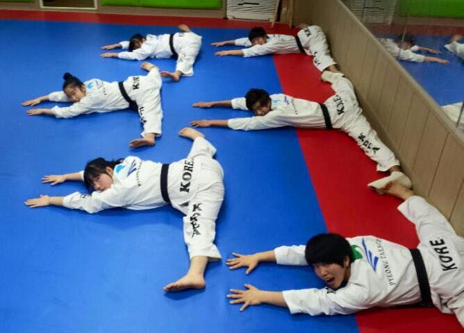
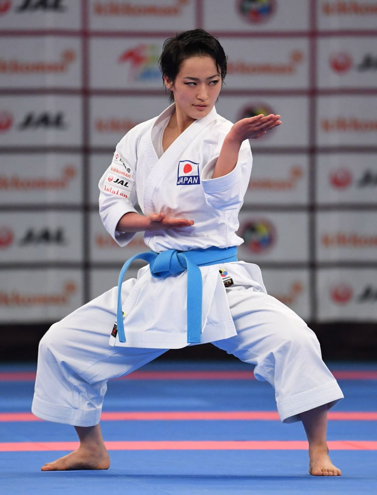
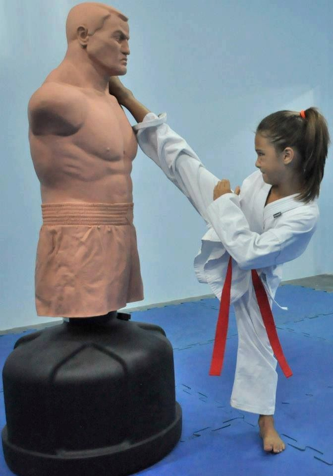

Por que praticar Karatê?
O Karatê proporciona diversos benefícios para o corpo e para a mente. Além de melhorar a condição física, também fortalece valores como disciplina, respeito e perseverança.

Condicionamento Físico
Melhora força, resistência, flexibilidade e coordenação motora.

Disciplina
Ensina responsabilidade, foco e comprometimento.

Autoconfiança
Ajuda no desenvolvimento emocional e na autoestima.